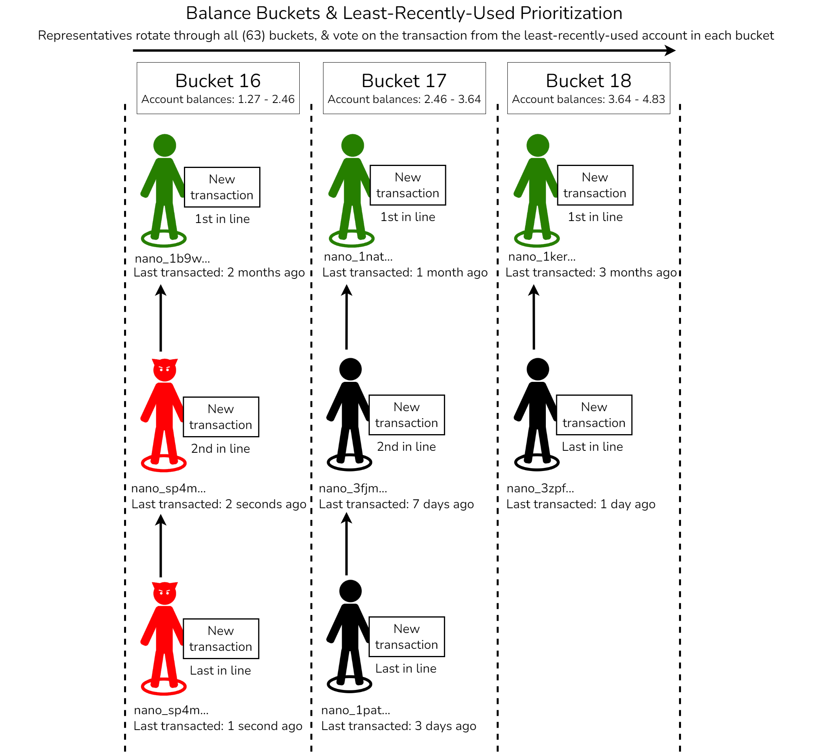

Protocol Design - Spam, Work, & Prioritization¶
Part of work in progress Living Whitepaper
This page is part of the Living Whitepaper revisions currently underway to replace the original static whitepaper. These efforts include the Protocol Design and Node Implementation sections of the docs, which will cover and expand on details and topics covered in the original whitepaper.
See the bottom of the page for related whitepaper sections and other related details. Some of the sections and headers on this page may be in draft form or just suggestions/framework for later consideration. If you are interested in helping with revisions please connect with us on the #documentation channel on our Discord server.
Spam resistance¶
A spam transaction is loosely defined as a block broadcasted with the intent to saturate the network, reduce network availability, or increase the size of the ledger. In order to make spam more costly, each valid block in Nano requires a proof-of-work (PoW) solution to be attached to it - similar to the original Hashcash proposition1. Participants can compute the required work in a few seconds, and verification time for this work is negligible (to prevent invalid blocks, large work, and/or invalid work from becoming a denial-of-service attack vector). The cost of spamming the network then increases linearly with the number of spam transactions, reducing the impact of spam from theoretically infinite to a manageable amount.
In addition to proof-of-work, another key component of Nano's defense against spam is transaction prioritization using a round-robin balance-bucket system, combined with least-recently-used (LRU) prioritization within those buckets. This system ensures that spam does not prevent legitimate users from making transactions & achieving fast confirmation, which in turn removes some of the incentives to spam (e.g. network disruption). See the prioritization details & prioritization buckets sections below for more information. While prioritization can be considered a "Node Implementation" topic, it's included in this "Protocol Design" discussion due to its relevance to spam resistance.
Spam resistance features¶
Below is a list of some of Nano's key spam mitigation features.
| Feature | Description | Version |
|---|---|---|
| bandwidth_limit | Restricts outbound bandwidth to a user-configurable limit. 10 MB/s by default. | V19+ |
| Balance tiers (buckets) | As of V27, there are 63 balance tiers (buckets) that nodes rotate through in a round-robin manner. Spamming a single bucket (e.g. Ӿ0.0001) has minimal impact on accounts in other buckets (e.g. Ӿ1, Ӿ5, etc). See prioritization details below. | V22+ |
| Bootstrap limits | Configurable ascended bootstrapper limits via requests_limit, database_requests_limit, pull_count, timeout, bootstrap_bandwidth_limit, bootstrap_connections_max, etc. Default outbound bootstrap traffic limit is 5MB/s. Default max incoming bootstrap connections count is 64 (lower values save IOPs & bandwidth). | V25+ |
| Bounded active election buckets | Limits election bucket size and allows for dynamically dropping and scheduling higher priority elections. Buckets can be configured to opportunistically use more available space if AEC is underutilized. | V27+ |
| Bounded block backlog | Implements limits on unconfirmed transaction storage and processing, which helps ensure consistent confirmation rates during high network load and prevents resource exhaustion attacks. | V28+ |
| Bounded unchecked memory table | Add a memory container for unchecked blocks once the initial bootstrap threshold is reached, with blocks pruned in FIFO order. Limited to two items per dependency. | V23.3+ |
| Fair queueing | Each peer (node) & each component (e.g. block processor, vote processor, bootstrap server, request aggregator, etc) gets its own small queue with a configurable size & priority. Nodes process these queues in a (weighted) round robin manner. This ensures that even when network is under stress, data coming from well-behaved peers is ingested quickly. | V27+ |
| Final vote replies | For blocks that are marked as final or confirmed, nodes will only respond with final votes (not non-final votes). This signficantly reduces network (specifically voting) traffic. | V27+ |
| Hinted elections | A percentage of election slots are reserved for hinted elections, meaning that nodes start elections for transactions with a high vote weight, regardless of individual node priority. This allows the network to progress forward on confirmations, keeping the network in sync. | V24+ |
| Hinted elections for dependencies | The hinted election scheduler now detects cases when the node falls behind the network and is missing confirmations for block dependencies, and then activates elections for the blocks that were missed. | V26+ |
| is_originator flag | Adds a flag to publish messages that identifies if a block is from a node that performed the initial flooding. Helps ensure original blocks get priority over republished blocks. | V27+ |
| Lazy bootstrapping | Similar to optimistic elections, but for bootstrapping. Passively listens for votes on the real-time network, and confirms block dependencies if the (more recent) block is confirmed. | V17+ |
| Least-Recently Used (LRU) Prioritization | Within a given balance tier (bucket), the least-recently-used account has the highest priority. | V22+ |
| Local block broadcaster | Only rebroadcast blocks during active elections. Move initial block gossip responsibility to the block originator. | V27+ |
| message_deserializer checks | Check for correct message formats before full processing (valid work, valid header, valid message type, valid version, valid network bytes (magic bytes), etc). | All |
| Optimistic elections | If a more recent block is confirmed, all of its dependencies are also confirmed. | V25+ |
| Prevent requeuing of blocks with invalid signatures | Requeueing of blocks with invalid signatures during lazy bootstrapping is not needed, since an invalid signature will always be invalid and doesn't need to be bootstrapped again. | V25+ |
| Proof-of-Work | Each Nano transaction requires a small Proof-of-Work. | All |
| Rep crawler overhaul | Consistently find representatives, even when vote requests are unreliable | V27+ |
| Traffic Shaping | Enables more equal distribution of network resources among peers & proactively manages network traffic to help prevent congestion. | V28+ |
| Vote by hash | Instead of voting with a full block (256 bytes), representatives vote with block hashes (32 bytes), and batch these hashes. As of V27, nodes can vote for up to 255 hashes in a single vote. | V15+ |
| Vote Distribution Optimization | Separate vote flooding patterns for PRs and non-PRs, to ensure votes are distributed more efficiently. | V28+ |
| Vote Filtering | Filters out vote duplicates early on during packet processing. | V28+ |
| Vote Rebroadcaster Filtering | An index that tracks and filters vote rebroadcasts. Includes: tracking the top 100 reps by weight, per-rep history of recent votes & block hashes, deduplicating by vote hash, minimum time interval between rebroadcasts of the same hash from the same rep. | V28+ |
| (Future) Additional improvements | See list of potential future improvements that have been noted for additional research. | Future |
Work algorithm details¶
Every block includes a work field that must be correctly populated. Valid work is obtained by randomly guessing a nonce such that:
where H is an algorithm, usually in the form of a hash function, || is the concatenation operator, threshold is a parameter of the network that relates to the resources spent to obtain a valid work, and x is either:
- The account's public key, in the case of the first block on the account, or
- The previous block's hash
The following image illustrates the process by which valid work is obtained for Block 2.
The work field is not used when signing a block. This design has two consequences:
-
A block can be securely signed locally, while the work is requested from a remote server, with larger resources. This is especially important for devices with low resources.
-
Since all inputs are known before generating a block, a user can precompute the work for the next block, eliminating any time between creating and broadcasting a block. After a block is created, the next block's work can be computed immediately, using the last block's hash as input.
Choosing an algorithm¶
While the specific algorithm used is an implementation decision, there is a minimal set of requirements that must be met for compatibility with the Nano protocol.
- Asymmetry. Verifying work should take the least amount of resources (including time) as possible.
- Small proof size. Work should take a minimal amount of a block's size compared to the resources required to generate it, in order to reduce overhead and maximize throughput.
- Amortization-free. The cost of obtaining work for multiple blocks should scale linearly with the number of blocks. This ensures fairness for all participants.
- Progress-free. Any attempt at obtaining work should follow a stochastic process, with no dependence on previous attempts.
Additional requirements of parameter flexibility, constrained parallelism, and being optimization-free, are desired but not required 2.
Prioritization details¶
As of V27, Nano representatives rotate (round-robin) through 63 balance-based buckets when voting on transactions, and the least-recently-used (LRU) accounts in each bucket have the most priority (within their bucket). For example, if an account with 1 XNO and another account with 5 XNO both make two transactions, Nano representatives will vote on one transaction from the 1 XNO bucket, and one transaction from the 5 XNO bucket, before voting on a second transaction from the same bucket. Furthermore, the least-recently-used account within a bucket has the most priority (in that bucket), so after an account makes a transaction it gets moved to the back of the line behind everyone else (in that bucket). This means that if an attacker tries to send thousands of transactions from an account that only has 0.00001 Nano (for example), other accounts in the 0.00001 bucket that don't make frequent transactions will have priority over the spam, and the 0.00001 bucket spam will have no impact on accounts in other balance-buckets (e.g. 1 XNO).
Balance-based Buckets
Prioritization buckets are split by account balances, not transaction amounts
Prior to V24, there were 129 balance buckets4, with the majority (89) of those buckets being for balances under 0.0003. Since most legitimate users tend to have larger balances, most of these 89 balance buckets were minimally used. In V24 this was updated to 62 balance buckets35, & account balances under 0.0003 shared the same bucket. This created more buckets around typical real-world account balances, helping prioritize legitimate transactions over spam. V27 added an additional bucket (Ӿ0.000001 to Ӿ0.0003) to account for common wallet and faucet minimums6.
The following image illustrates the balance bucket & least-recently-used prioritization process:

Prioritization buckets¶
Here are the 63 balance buckets in the reference node implementation, based on the V27 source code6. Table values truncated for readability:
| Bucket Number | Bucket Region (uint128) | Bucket Range (Nano) | Bucket Range (Raw) |
|---|---|---|---|
| 0 | 0 - 2^79 | 0.0000000000000 - 0.0000006044629 | 0 - 604462909807314587353088 |
| 1 | 2^79 - 2^88 | 0.0000006044629 - 0.0003094850098 | 604462909807314587353088 - 309485009821345068724781056 |
| 2 | 2^88 - 2^92 | 0.0003094850098 - 0.0026306225834 | 309485009821345068724781056 - 2630622583481433084160638976 |
| 3 | 2^88 - 2^92 | 0.0026306225834 - 0.0049517601571 | 2630622583481433084160638976 - 4951760157141521099596496896 |
| 4 | 2^92 - 2^96 | 0.0049517601571 - 0.0235208607464 | 4951760157141521099596496896 - 23520860746422225223083360256 |
| 5 | 2^92 - 2^96 | 0.0235208607464 - 0.0420899613357 | 23520860746422225223083360256 - 42089961335702929346570223616 |
| 6 | 2^92 - 2^96 | 0.0420899613357 - 0.0606590619249 | 42089961335702929346570223616 - 60659061924983633470057086976 |
| 7 | 2^92 - 2^96 | 0.0606590619249 - 0.0792281625142 | 60659061924983633470057086976 - 79228162514264337593543950336 |
| 8 | 2^96 - 2^100 | 0.0792281625142 - 0.2277809672285 | 79228162514264337593543950336 - 227780967228509970581438857216 |
| 9 | 2^96 - 2^100 | 0.2277809672285 - 0.3763337719427 | 227780967228509970581438857216 - 376333771942755603569333764096 |
| 10 | 2^96 - 2^100 | 0.3763337719427 - 0.5248865766570 | 376333771942755603569333764096 - 524886576657001236557228670976 |
| 11 | 2^96 - 2^100 | 0.5248865766570 - 0.6734393813712 | 524886576657001236557228670976 - 673439381371246869545123577856 |
| 12 | 2^96 - 2^100 | 0.6734393813712 - 0.8219921860854 | 673439381371246869545123577856 - 821992186085492502533018484736 |
| 13 | 2^96 - 2^100 | 0.8219921860854 - 0.9705449907997 | 821992186085492502533018484736 - 970544990799738135520913391616 |
| 14 | 2^96 - 2^100 | 0.9705449907997 - 1.1190977955139 | 970544990799738135520913391616 - 1119097795513983768508808298496 |
| 15 | 2^96 - 2^100 | 1.1190977955139 - 1.2676506002282 | 1119097795513983768508808298496 - 1267650600228229401496703205376 |
| 16 | 2^100 - 2^104 | 1.2676506002282 - 2.4560730379421 | 1267650600228229401496703205376 - 2456073037942194465399862460416 |
| 17 | 2^100 - 2^104 | 2.4560730379421 - 3.6444954756561 | 2456073037942194465399862460416 - 3644495475656159529303021715456 |
| 18 | 2^100 - 2^104 | 3.6444954756561 - 4.8329179133701 | 3644495475656159529303021715456 - 4832917913370124593206180970496 |
| 19 | 2^100 - 2^104 | 4.8329179133701 - 6.0213403510840 | 4832917913370124593206180970496 - 6021340351084089657109340225536 |
| 20 | 2^100 - 2^104 | 6.0213403510840 - 7.2097627887980 | 6021340351084089657109340225536 - 7209762788798054721012499480576 |
| 21 | 2^100 - 2^104 | 7.2097627887980 - 8.3981852265120 | 7209762788798054721012499480576 - 8398185226512019784915658735616 |
| 22 | 2^100 - 2^104 | 8.3981852265120 - 9.5866076642259 | 8398185226512019784915658735616 - 9586607664225984848818817990656 |
| 23 | 2^100 - 2^104 | 9.5866076642259 - 10.775030101939 | 9586607664225984848818817990656 - 10775030101939949912721977245696 |
| 24 | 2^100 - 2^104 | 10.775030101939 - 11.963452539653 | 10775030101939949912721977245696 - 11963452539653914976625136500736 |
| 25 | 2^100 - 2^104 | 11.963452539653 - 13.151874977367 | 11963452539653914976625136500736 - 13151874977367880040528295755776 |
| 26 | 2^100 - 2^104 | 13.151874977367 - 14.340297415081 | 13151874977367880040528295755776 - 14340297415081845104431455010816 |
| 27 | 2^100 - 2^104 | 14.340297415081 - 15.528719852795 | 14340297415081845104431455010816 - 15528719852795810168334614265856 |
| 28 | 2^100 - 2^104 | 15.528719852795 - 16.717142290509 | 15528719852795810168334614265856 - 16717142290509775232237773520896 |
| 29 | 2^100 - 2^104 | 16.717142290509 - 17.905564728223 | 16717142290509775232237773520896 - 17905564728223740296140932775936 |
| 30 | 2^100 - 2^104 | 17.905564728223 - 19.093987165937 | 17905564728223740296140932775936 - 19093987165937705360044092030976 |
| 31 | 2^100 - 2^104 | 19.093987165937 - 20.282409603651 | 19093987165937705360044092030976 - 20282409603651670423947251286016 |
| 32 | 2^104 - 2^108 | 20.282409603651 - 39.297168607075 | 20282409603651670423947251286016 - 39297168607075111446397799366656 |
| 33 | 2^104 - 2^108 | 39.297168607075 - 58.311927610498 | 39297168607075111446397799366656 - 58311927610498552468848347447296 |
| 34 | 2^104 - 2^108 | 58.311927610498 - 77.326686613921 | 58311927610498552468848347447296 - 77326686613921993491298895527936 |
| 35 | 2^104 - 2^108 | 77.326686613921 - 96.341445617345 | 77326686613921993491298895527936 - 96341445617345434513749443608576 |
| 36 | 2^104 - 2^108 | 96.341445617345 - 115.35620462076 | 96341445617345434513749443608576 - 115356204620768875536199991689216 |
| 37 | 2^104 - 2^108 | 115.35620462076 - 134.37096362419 | 115356204620768875536199991689216 - 134370963624192316558650539769856 |
| 38 | 2^104 - 2^108 | 134.37096362419 - 153.38572262761 | 134370963624192316558650539769856 - 153385722627615757581101087850496 |
| 39 | 2^104 - 2^108 | 153.38572262761 - 172.40048163103 | 153385722627615757581101087850496 - 172400481631039198603551635931136 |
| 40 | 2^104 - 2^108 | 172.40048163103 - 191.41524063446 | 172400481631039198603551635931136 - 191415240634462639626002184011776 |
| 41 | 2^104 - 2^108 | 191.41524063446 - 210.42999963788 | 191415240634462639626002184011776 - 210429999637886080648452732092416 |
| 42 | 2^104 - 2^108 | 210.42999963788 - 229.44475864130 | 210429999637886080648452732092416 - 229444758641309521670903280173056 |
| 43 | 2^104 - 2^108 | 229.44475864130 - 248.45951764473 | 229444758641309521670903280173056 - 248459517644732962693353828253696 |
| 44 | 2^104 - 2^108 | 248.45951764473 - 267.47427664815 | 248459517644732962693353828253696 - 267474276648156403715804376334336 |
| 45 | 2^104 - 2^108 | 267.47427664815 - 286.48903565157 | 267474276648156403715804376334336 - 286489035651579844738254924414976 |
| 46 | 2^104 - 2^108 | 286.48903565157 - 305.50379465500 | 286489035651579844738254924414976 - 305503794655003285760705472495616 |
| 47 | 2^104 - 2^108 | 305.50379465500 - 324.51855365842 | 305503794655003285760705472495616 - 324518553658426726783156020576256 |
| 48 | 2^108 - 2^112 | 324.51855365842 - 932.99084176797 | 324518553658426726783156020576256 - 932990841767976839501573559156736 |
| 49 | 2^108 - 2^112 | 932.99084176797 - 1,541.463129877 | 932990841767976839501573559156736 - 1541463129877526952219991097737216 |
| 50 | 2^108 - 2^112 | 1,541.463129877 - 2,149.935417987 | 1541463129877526952219991097737216 - 2149935417987077064938408636317696 |
| 51 | 2^108 - 2^112 | 2,149.935417987 - 2,758.407706096 | 2149935417987077064938408636317696 - 2758407706096627177656826174898176 |
| 52 | 2^108 - 2^112 | 2,758.407706096 - 3,366.879994206 | 2758407706096627177656826174898176 - 3366879994206177290375243713478656 |
| 53 | 2^108 - 2^112 | 3,366.879994206 - 3,975.352282315 | 3366879994206177290375243713478656 - 3975352282315727403093661252059136 |
| 54 | 2^108 - 2^112 | 3,975.352282315 - 4,583.824570425 | 3975352282315727403093661252059136 - 4583824570425277515812078790639616 |
| 55 | 2^108 - 2^112 | 4,583.824570425 - 5,192.296858534 | 4583824570425277515812078790639616 - 5192296858534827628530496329220096 |
| 56 | 2^112 - 2^116 | 5,192.296858534 - 24,663.41007804 | 5192296858534827628530496329220096 - 24663410078040431235519857563795456 |
| 57 | 2^112 - 2^116 | 24,663.41007804 - 44,134.52329754 | 24663410078040431235519857563795456 - 44134523297546034842509218798370816 |
| 58 | 2^112 - 2^116 | 44,134.52329754 - 63,605.63651705 | 44134523297546034842509218798370816 - 63605636517051638449498580032946176 |
| 59 | 2^112 - 2^116 | 63,605.63651705 - 83,076.74973655 | 63605636517051638449498580032946176 - 83076749736557242056487941267521536 |
| 60 | 2^116 - 2^120 | 83,076.74973655 - 706,152.3727607 | 83076749736557242056487941267521536 - 706152372760736557480147500773933056 |
| 61 | 2^116 - 2^120 | 706,152.3727607 - 1,329,227.99578 | 706152372760736557480147500773933056 - 1329227995784915872903807060280344576 |
| 62 | 2^120 - 2^128 | 1,329,227.99578 - 340,282,366.920 | 1329227995784915872903807060280344576 - 340282366920938463463374607431768211456 |
Existing whitepaper sections related to this page:
Existing content related to this page:
-
A. Back, âHashcash - a denial of service counter-measure,â 2002. [Online]. Available: http://www.hashcash.org/papers/hashcash.pdf ↩
-
For more details on these requirements, refer to A. Biryukov, "Equihash: Asymmetric Proof-of-Work Based on the Generalized Birthday Problem" 2017. [Online]. Available: https://doi.org/10.5195/ledger.2017.48 ↩
-
C. LeMahieu et al, "Nanocurrency/Nano-Node - Prioritization.cpp". [Online]. Available: https://github.com/clemahieu/nano-node/blob/releases/v24/nano/node/prioritization.cpp#L46-L73 ↩
-
A. Titan, "All 129 prioritization buckets in Nano", 2021. [Online]. Available: https://www.reddit.com/r/nanocurrency/comments/myf9c2/all_129_prioritization_buckets_in_nano/ ↩
-
P. Luberus, "Visualizing the updated V24 balance buckets (62 prioritization buckets)", 2022. [Online]. Available: https://www.reddit.com/r/nanocurrency/comments/zydm1w/visualizing_the_updated_v24_balance_buckets_62/ ↩
-
Bob, "Add New Bucket for Specific Amount Range", 2024. [Online]. Available: https://github.com/nanocurrency/nano-node/pull/4661 ↩↩